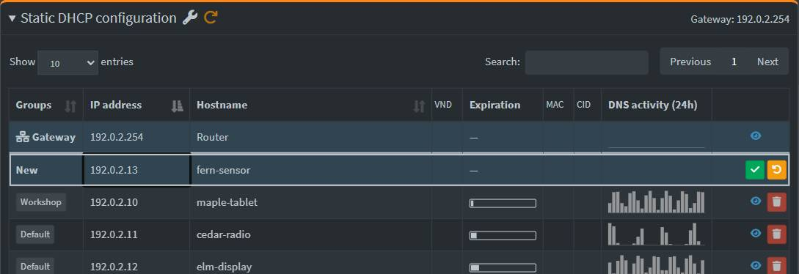
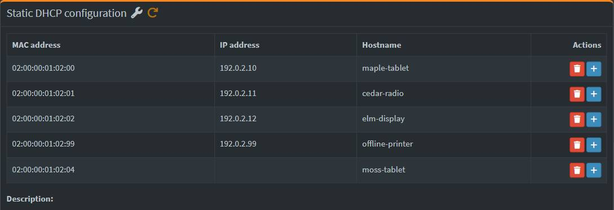
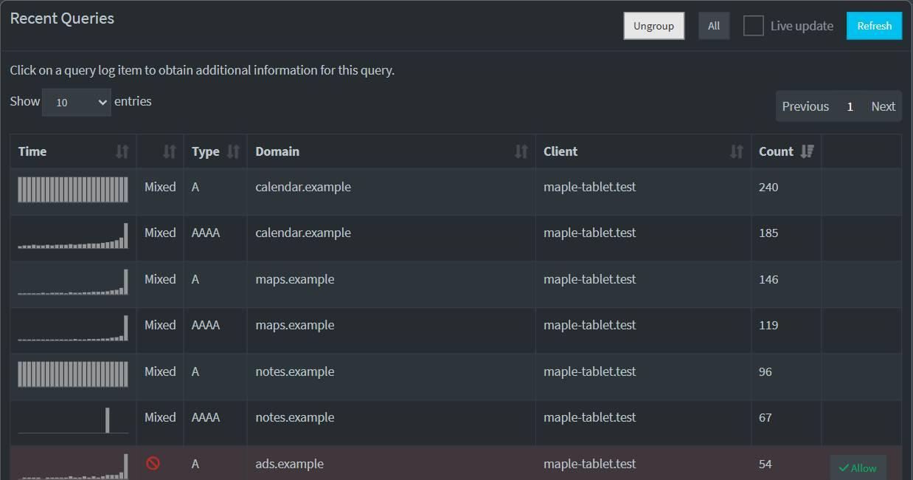
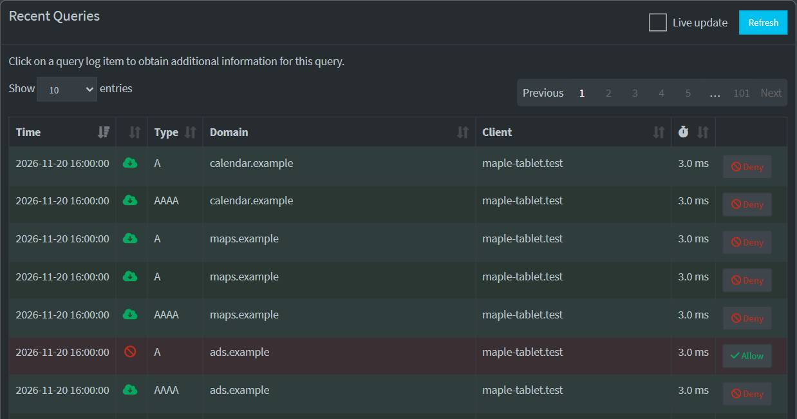

pihole-aaf
Install, update, or undo
- Paste the setup prompt into your AI assistant.
- Choose the pages and action. Enter your Pi-hole address and SSH command.
Before and after
Drag a divider or focus it and use the arrow keys. Each pair shows the same fictional data.
DHCP
Select + beside an active lease. The patched table opens an editable row marked New above the saved reservations. The screenshot shows MAC and CID collapsed with empty cells.
Before · Stock Pi-holeAfter · awesome-a-fyer


↔
Query Log
Select Group to see how often each client repeats a query. The bars show when the requests occurred.
Before · Stock Pi-holeAfter · awesome-a-fyer


↔
Back to the project